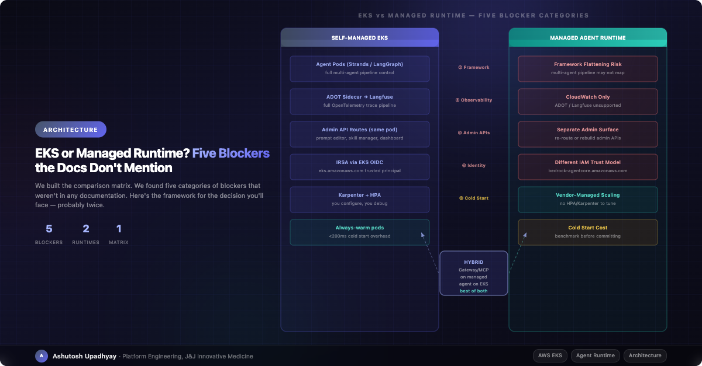

The migration looked straightforward. Then we found five categories of blockers. Here's the framework we wish we'd had before we started.
We run a production multi-agent AI research system on self-managed EKS. It handles a 4-stage pipeline — Data Scout, Analyst, Synthesizer, Critic — each running in its own Kubernetes pod, communicating over HTTP with circuit breakers, instrumented with OpenTelemetry traces flowing through an ADOT sidecar into both CloudWatch and a Langfuse instance we control.
When a managed agent runtime became available, the pitch was compelling: no Kubernetes manifests, no Karpenter NodePools, no HPA tuning, built-in session state, managed identity, automatic scaling. We spent two weeks building a structured comparison. We found five categories of blockers that weren't in any AWS documentation. This is the framework.
Before getting to the blockers, it's worth being precise about what you're trading. Most teams entering this comparison have a fuzzy mental model that leads to surprises in both directions.
What you give up:
deployment.yaml, no Karpenter, no HPA, no custom node configurationWhat you gain:
What stays your problem regardless of which path you take:
The key insight: the hard parts of running an AI agent system are mostly in your tool code, your prompts, and your data pipelines. The managed/self-managed boundary sits above all of that. Don't expect a runtime migration to simplify the parts that are actually hard.
We categorize blockers by what they require to resolve, not by how alarming they sound. A blocker that requires a two-line IAM change is different from one that requires re-architecting your observability stack.
| Blocker | Category | Severity | Resolution Cost |
|---|---|---|---|
| ① Multi-agent operational multiplication | Multi-agent orchestration | High | Validate against your specific framework before any migration work |
| ② Observability routing | Backend fan-out constraint | Medium | Choose CloudWatch (default) or custom backend; dual in-process export unverified |
| ③ Admin API surface | Operational workflow disruption | Medium | Separate deployment for admin services, new authentication wiring |
| ④ Identity federation | IAM trust policy change | Medium | Add service principal to existing role; update only resource-policy-gated services (S3, KMS) |
| ⑤ Cold start | Latency regression risk | Medium | Session reuse via runtimeSessionId eliminates within-session cold starts; benchmark across sessions |
If your agent uses an orchestration framework — Strands, LangGraph, CrewAI, or a custom multi-agent pattern — the managed runtime does support multi-agent architectures, but the migration is not a simple port. Our system runs a four-stage pipeline where each stage is a separate pod: Data Scout gathers evidence from 20+ data sources, Analyst runs statistical analysis, Synthesizer integrates evidence, Critic adversarially verifies the synthesis before it reaches the user.
In a managed runtime, four pipeline stages map to four runtimes — each needing its own ECR image, its own execution role, and its own deploy artifact. The first-class A2A (Agent-to-Agent) protocol is supported natively (port 9000, agent cards at /.well-known/agent-card.json), and sessions can be co-located for collaboration. But the in-cluster HTTP mesh with custom circuit breakers becomes InvokeAgentRuntime API calls whose retry semantics you don't own. That's real migration cost — multiplied by N stages — even though the architecture isn't fundamentally flattened.
Check before you start: Map your multi-agent topology to the managed runtime's execution model before writing a single line of migration code. If your stages have different tool registries, different LLM models, or different concurrency policies, count the number of runtimes × images × roles you'll need to maintain. The architecture survives; the operational surface multiplies.
ADOT (AWS Distro for OpenTelemetry) is supported inside the managed runtime — you add aws-opentelemetry-distro>=0.10.0 to your requirements and instrument with opentelemetry-instrument python main.py. What is not supported is the ADOT Collector sidecar, because there's no pod to attach it to.
The constraint this creates is routing: the collector sidecar pattern lets you fan-out to multiple backends simultaneously — CloudWatch for infra metrics, Langfuse for LLM traces, X-Ray for distributed tracing — from a single collector config. Without the sidecar, you must choose. The runtime's default ADOT configuration exports to CloudWatch. If you want a different backend (Langfuse, Honeycomb, Grafana Cloud), set DISABLE_ADOT_OBSERVABILITY=true and export directly from your application using an instrumentation library. AWS explicitly supports OpenInference, Openllmetry, OpenLit, and Traceloop — all of which are Langfuse-ingestible.
Dual in-process exporters (CloudWatch and Langfuse simultaneously via code) are undocumented and unverified at scale. If you've built your debugging workflow around correlating Langfuse LLM spans with CloudWatch infra metrics, you'll need to validate that the in-process pattern replicates that correlation before committing to migration.
Production agent systems accumulate operational APIs alongside the core agent: prompt editing interfaces, skill management, usage dashboards, feedback review, rate limit controls. On EKS, these run as routes on the same FastAPI app or as separate services in the same namespace, all sharing the pod's IRSA credentials and reachable via the same ingress.
In a managed runtime, there is no "same pod." Your admin endpoints need their own deployment — a separate service with its own authentication, its own scaling policy, and its own path through your VPN/proxy. The operational burden doesn't disappear; it moves to a second surface you now have to maintain separately from the agent.
On EKS, IRSA (IAM Roles for Service Accounts) works by attaching a role annotation to the Kubernetes service account. The trust policy on the IAM role names the EKS cluster's OIDC provider as the trusted principal.
# EKS IRSA: pod assumes role via OIDC web identity
"Action": "sts:AssumeRoleWithWebIdentity",
"Principal": {
"Federated": "arn:aws:iam::ACCOUNT_ID:oidc-provider/oidc.eks.REGION.amazonaws.com/id/CLUSTER_ID"
},
"Condition": {
"StringEquals": {
"oidc.eks.REGION.amazonaws.com/id/CLUSTER_ID:sub": "system:serviceaccount:NAMESPACE:SERVICEACCOUNT"
}
}In a managed runtime, the trusted principal is the runtime service itself, not an OIDC provider:
# Managed runtime: service assumes role directly
"Action": "sts:AssumeRole",
"Principal": {
"Service": "bedrock-agentcore.amazonaws.com"
},
"Condition": {
"StringEquals": {
"aws:SourceAccount": "ACCOUNT_ID"
},
"ArnLike": {
# Use wildcard at creation time — runtime ID isn't known yet (chicken-and-egg)
"aws:SourceArn": "arn:aws:bedrock-agentcore:REGION:ACCOUNT_ID:*"
}
}The key difference: EKS uses sts:AssumeRoleWithWebIdentity via OIDC; managed runtime uses sts:AssumeRole directly from the service principal. You can keep the same role ARN — just add bedrock-agentcore.amazonaws.com as a second trusted principal. Most downstream identity-based policies (DynamoDB, Bedrock) need no changes at all since the role ARN stays the same. The only services that typically require updates are those with resource-based policies that name the role explicitly — S3 bucket policies, KMS key policies. Athena workgroups have no resource policy. Count the actual resource-policy-gated services before estimating migration cost; it's usually far fewer than the full list of AWS services your agent touches.
EKS pods are always warm as long as they're running — no first-request penalty per turn. The first invocation to a new managed runtime session loads the execution environment, which adds latency. For research-oriented workloads where queries take 30–120 seconds, a cold start is negligible. For conversational agents with a <2 second response SLA, it matters.
AgentCore's mitigation is session reuse: a dedicated microVM is kept alive for invocations that share the same runtimeSessionId. While a session is active, subsequent turns skip the cold start entirely. The practical implication: design your session lifecycle carefully — a session that idles out forces the next turn to cold-start. Benchmark your actual p50/p95 latency across session boundaries before committing to a latency SLA. Published AWS numbers are upper bounds, not guarantees for your specific tool payload and container size.
The managed runtime genuinely improves a specific set of problems:
What doesn't change:
The managed runtime solves infrastructure operations, not agent quality. If your team spends most of its time on K8s operations, you'll get significant relief. If your team spends most of its time on prompt engineering, tool correctness, and evaluation, the managed runtime doesn't move that needle.
For most production teams with existing EKS investments, the right answer isn't "migrate" or "don't migrate" — it's hybrid.
Use the managed runtime for its Gateway component: expose a subset of your agent's tools as an MCP (Model Context Protocol) server. Other agents — internal tools, partner integrations, automated pipelines — can call your agent's capabilities without needing direct API access. The Gateway layer handles authentication, rate limiting, and tool schema publication. Your core agent keeps running on EKS where you have full observability and control.
The hybrid pattern in practice: managed Gateway exposes 3–5 high-value tools (your primary query interface, a key data source, a synthesis capability) as MCP endpoints. Policy and guardrails attach to the Gateway layer. Your main agent on EKS calls the Gateway when acting as an agent consumer, and the Gateway calls back into EKS when external agents need your capabilities. You get the ecosystem integration benefits without the migration risk.
This is the pattern we're building toward: AgentCore Gateway as the MCP exposure layer, the core research agent staying on EKS until the remaining blockers either resolve or become irrelevant for our workload.
Use this to locate yourself in the decision space. For each dimension, the cells indicate which migration path is appropriate — not as an absolute rule, but as a starting signal.
| Dimension | Migrate Now | Hybrid | Stay on EKS |
|---|---|---|---|
| Cold start tolerance | ✓ >5s acceptable | ≈ session reuse covers within-session turns | ✗ <2s SLA required |
| Observability stack | ✓ CloudWatch-only is fine | ≈ re-instrument non-critical paths | ✗ CloudWatch+Langfuse fan-out via single collector non-negotiable |
| Multi-agent framework | ✓ Single-agent or simple | ≈ Gateway for tool exposure | ✗ Complex pipeline with separate pods |
| Admin API surface | ✓ Minimal or none | ≈ acceptable to split deployment | ✗ Heavy operational UI on same surface |
| Identity model | ✓ Simple, few downstream services | ≈ re-wire in phases | ✗ Complex OIDC federation across many services |
| Team K8s burden | ✓ >20% of time on infra ops | ≈ moderate K8s overhead | ✗ <5% time on K8s, features dominate |
There are scenarios where a full migration is the right call:
Do not migrate if:
The five categories above come from documentation gaps. But we also found issues that weren't documentation problems — they were architectural assumptions we'd made that the managed runtime invalidates.
Atomic data location flips. Our S3-backed data tables use an active_version.json pointer pattern: new data lands in a versioned prefix, and the Glue table location is atomically updated by flipping the pointer. This gives us zero-downtime data updates with instant rollback. A managed runtime with a fixed execution environment doesn't have an equivalent pattern — you'd need to re-think the atomic update mechanism entirely.
Port-forwarded admin access. We use kubectl port-forward to access internal admin endpoints from local machines during debugging. In a managed runtime, port-forwarding doesn't exist. You need a proper bastion or VPN path to every management endpoint before you migrate — not after.
PrivateLink setup timeline. Managed runtimes use PrivateLink + VPC Lattice for private connectivity. In practice, provisioning the necessary VPC endpoints, service policies, and DNS records requires networking team involvement and takes 3–5 working days at most enterprise organizations. Budget for this in your migration timeline, not as a same-day task.
Governance sign-off. In a managed runtime, conversation data flows through a vendor-managed execution environment. For healthcare and pharmaceutical organizations, this requires explicit governance review of where data lands, who can access it, and how it's retained. The correct technical answer depends on the compute type: with the Instances compute type, workloads run on EC2 in your account and your VPC. With the default serverless microVM type, compute is AWS-managed — your data and model calls stay within your account boundary, but the execution environment itself is vendor-run. Start the governance review early and be precise about which compute type you're evaluating.
The two weeks we spent on the comparison matrix weren't wasted — they surfaced decisions that would have taken months to find in production. The hybrid answer we landed on (Gateway for MCP exposure, EKS for the core agent) is better architecture than either pure option would have been, precisely because the comparison forced us to articulate what we actually need from each layer.
The managed runtime is genuinely good for the problems it solves. It just doesn't solve the problems that are actually hard. For teams evaluating this decision: be honest about where your operational burden lives. If it's in Kubernetes, you'll get significant relief. If it's in agent quality — prompt reliability, tool correctness, evaluation — you'll be just as busy after the migration as before, with a different infrastructure to learn.